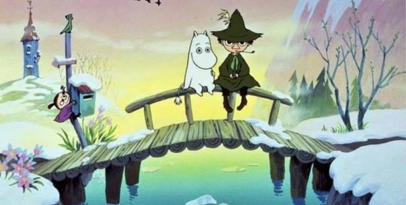

Каждый год поздно осенью Снусмумрик покидает Муми-долину и отправляется в долгое путешествие — и всегда возвращается в первый теплый весенний день. Все необходимое он носит с собой в рюкзаке, в том числе и губную гармошку, на которой любит наигрывать на ходу. Муми-тролль каждый раз предвкушает возвращение старого друга и ждет его на мосту через реку, где они любят сидеть и разговаривать. Услышав звуки губной гармошки, возвещающие приближение Снусмумрика, Муми-тролль каждый раз становится счастливее всех... ...Фрекен Снорк положила голову на плечо Муми-троллю и немножко всплакнула. - Ведь это про нас поется, – всхлипывала она. – Ведь это у нас такие маленькие усталые ножки, и еще неизвестно, доберемся ли мы до дому! - Доберемся, – уверенно отвечал Муми-тролль. – Не плачь! Мы придем домой, и мама даст нам обедать и скажет: “Подумать только, вы вернулись живы-здоровы!” А мы скажем: “Ты не можешь себе представить, что нам довелось пережить!” - А у меня будет ножной браслет из жемчужин,- прошептала фрекен Снорк и вытерла слезы.- А одну жемчужину мы оставим тебе на булавку для галстука. - Ладно,- сказал Муми-тролль.- Хотя я так редко ношу галстук! А Снусмумрик играл песни, одну за другой, и теперь это были сумеречные колыбельные песни и прощальные, и один за другим мелкие лесные жители и водяные потянулись обратно в лес. Древесные духи спрятались в своих жилищах, а фрекен Снорк уснула с зеркальцем в лапах. Наконец песни смолкли, и на лужайке стало тихо. Светлячки погасли, начало медленно-медленно светать.
Чтобы встретиться со мной ты можешь присоединиться к Муми-Троллю, он знает, где меня найти. Также можешь написать по электронной почте Максиму mprigon@yandex.ru, он передаст мне, хотя, когда я в пути, то не читаю электронную почту и не ношу с собой телефон, я ценю свободу...